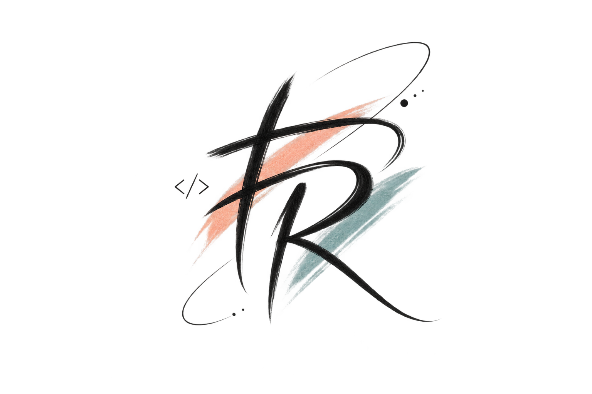
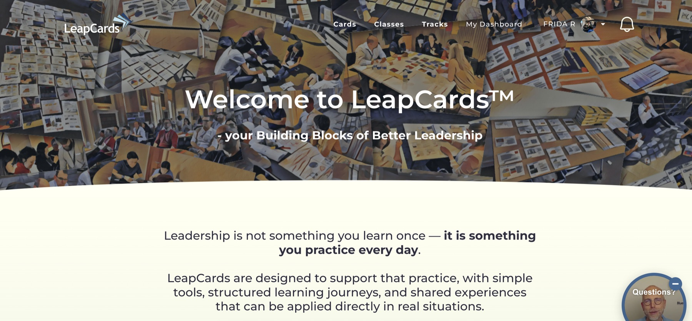
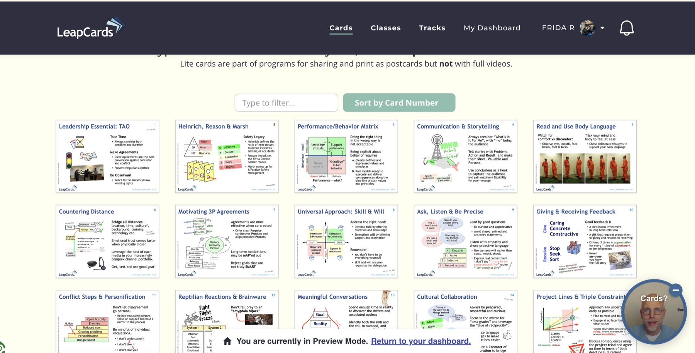
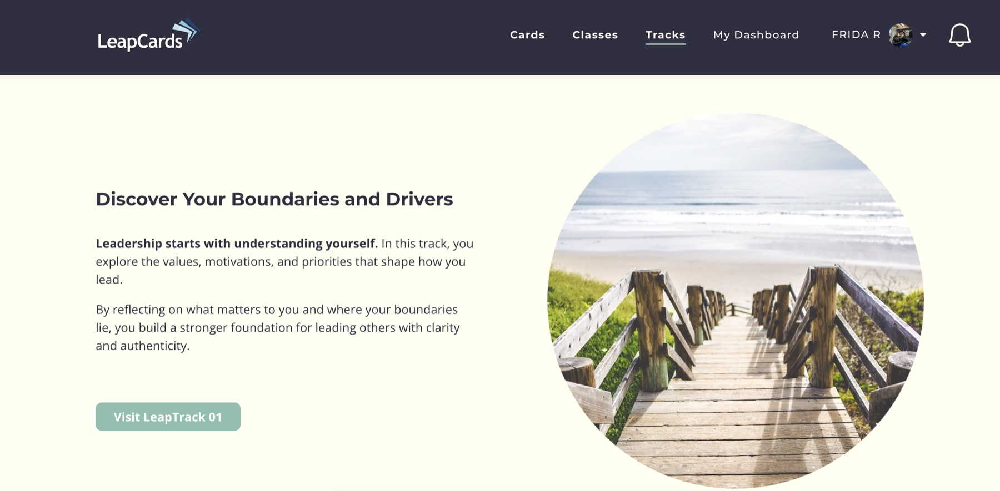
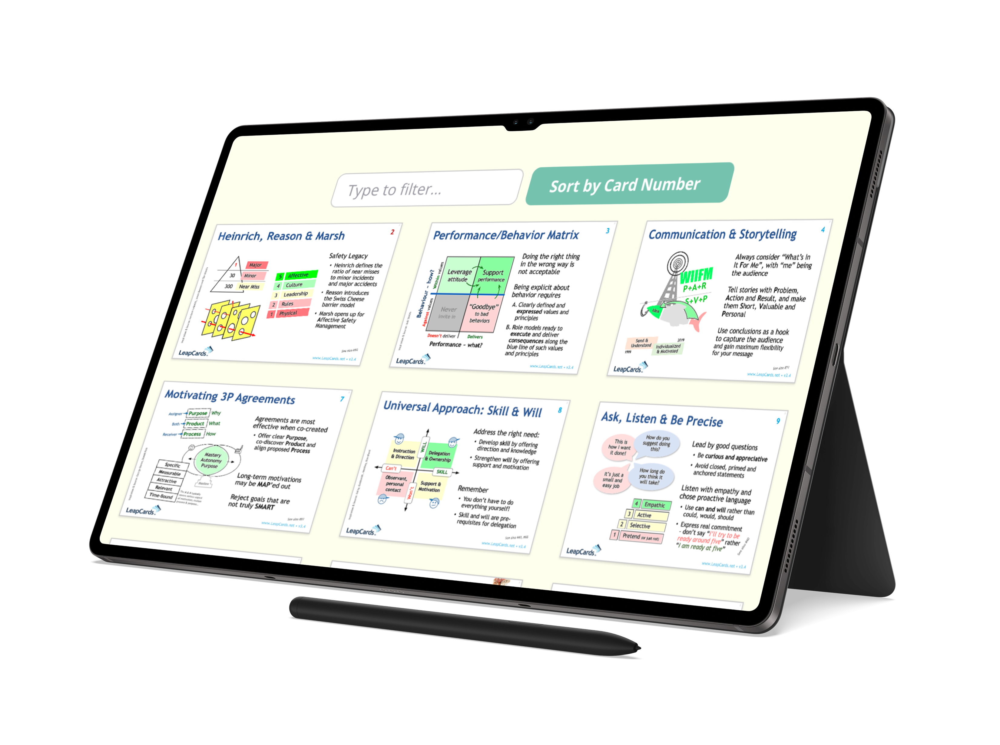
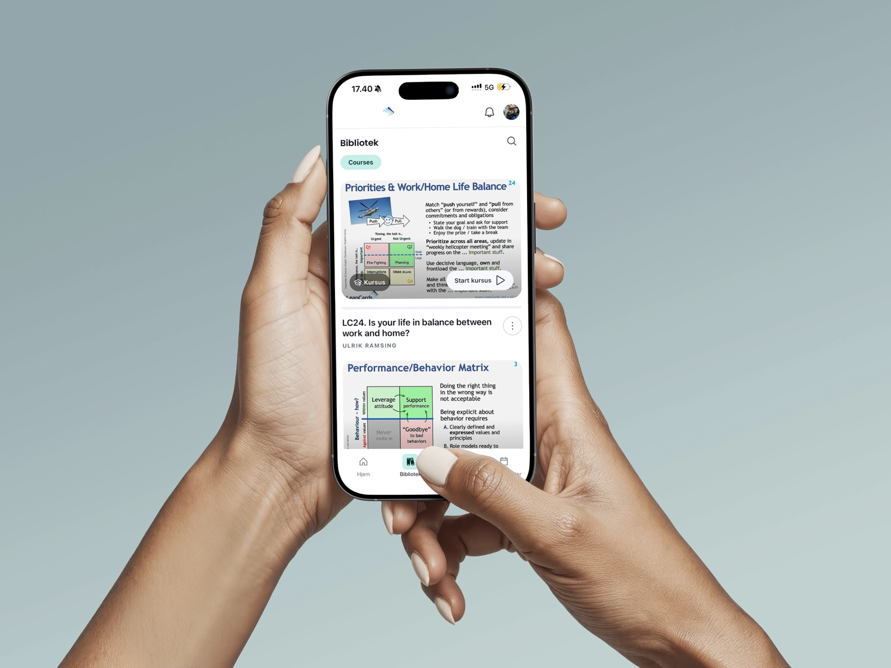

Modernised design
I updated the website expression so it feels more current, while still fitting LeapCards' existing identity and learning universe.

work / website redesign
I redesigned LeapCards.net into a newer and more modern learning platform experience, while keeping the visual identity close to the brand people already knew.

overview
LeapCards needed a website that felt fresher and easier to move through, without losing the identity behind the product. My focus was to modernise the experience, make the content feel more structured and create a clearer digital place for cards, classes and learning tracks.
After the upgrade became a success, my role expanded into content performance management. That means I now work with how the content performs, how users engage with the platform and how the experience can keep improving over time.
highlights
I updated the website expression so it feels more current, while still fitting LeapCards' existing identity and learning universe.
Cards, classes and tracks were presented in a more scannable way, making it easier for users to understand what they can do next.
With 923 users on the platform, the project is now also about following content performance and learning from real usage.
visuals




next
This is the first work case in the portfolio. Leaptrack and Nestle LP will be added next, so the work section can show both platform design, digital flows and landing page communication.
back to all projects